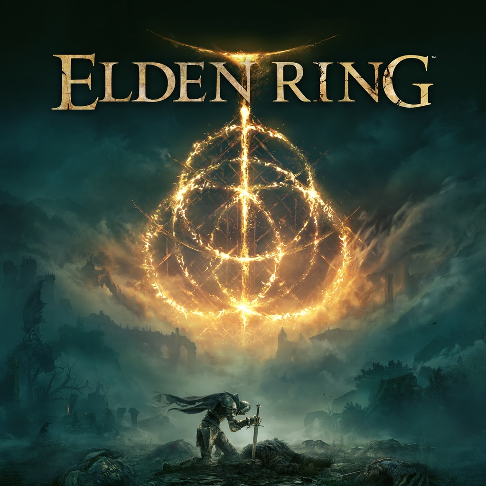
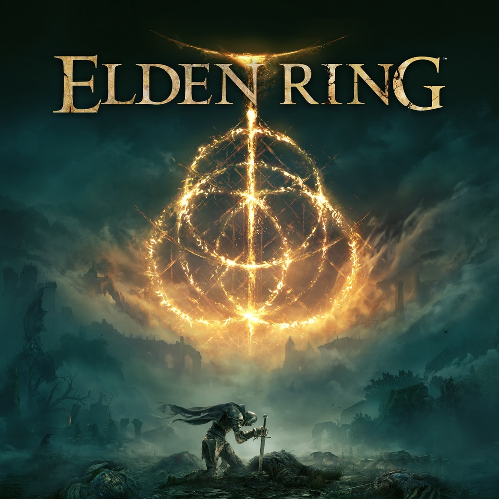

Action games details:
God of War
Elden Ring
Hades
 


The action games that I recommend are God Of War, Elden Ring and Hades.
God Of War: God of war God of War is an action-adventure video game developed by Santa Monica Studio and published by Sony Interactive Entertainment (SIE). It was released in April 2018 for the PlayStation 4, with a Microsoft Windows version released in January 2022. this installment is loosely inspired by Norse mythology. For the first time in the series, there are two protagonists: Kratos, the former Greek God of War who remains the only playable character, and his young son, Atreus. Following the death of Kratos' second wife, Atreus' mother, they journey to fulfill her request that her ashes be spread at the highest peak of the nine realms. Kratos keeps his troubled past a secret from Atreus, who is unaware of his divine nature. Along their journey, they come into conflict with monsters and gods of the Norse world.
Elden Ring: Elden Ring is a 2022 action role-playing game developed by FromSoftware and published by Bandai Namco Entertainment. It was directed by Hidetaka Miyazaki with worldbuilding provided by the fantasy writer George R. R. Martin. The game was released for PlayStation 4, PlayStation 5, Windows, Xbox One, and Xbox Series X/S on February 25. In Elden Ring, players control a customizable player character on a journey to repair the Elden Ring and become the new Elden Lord. The game is presented through a third-person perspective, with players freely roaming its interactive open world. Gameplay elements include combat using several types of weapons and magic spells, horseback riding, and crafting.
Hades: Hades is a roguelike action dungeon crawler video game developed and published by Supergiant Games. It was released for Microsoft Windows, macOS, and Nintendo Switch in September 2020. Players control Zagreus, the son of Hades, as he attempts to escape from the Underworld to reach Mount Olympus, at times aided by gifts bestowed on him from the other Olympians. Each run challenges the player through a random series of rooms populated with enemies and rewards. The game has a hack and slash combat system; the player uses a combination of their main weapon attack, a special attack, a dash ability, and a magic ability to defeat them while avoiding damage to progress as far as possible. While Zagreus will often die, the player can use gained treasure to improve certain attributes or unlock new weapons and abilities to improve chances of escaping on subsequent runs.